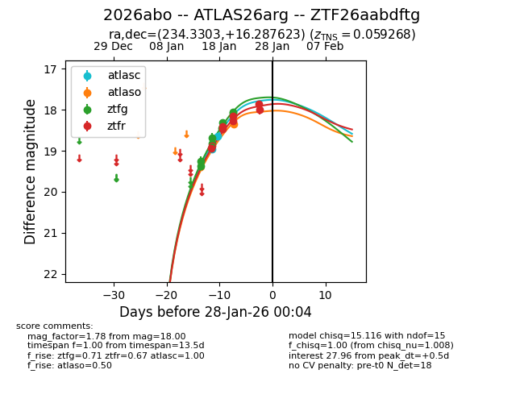
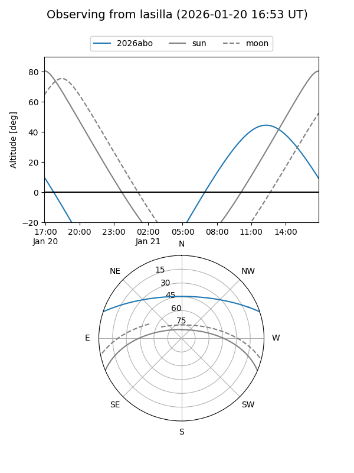
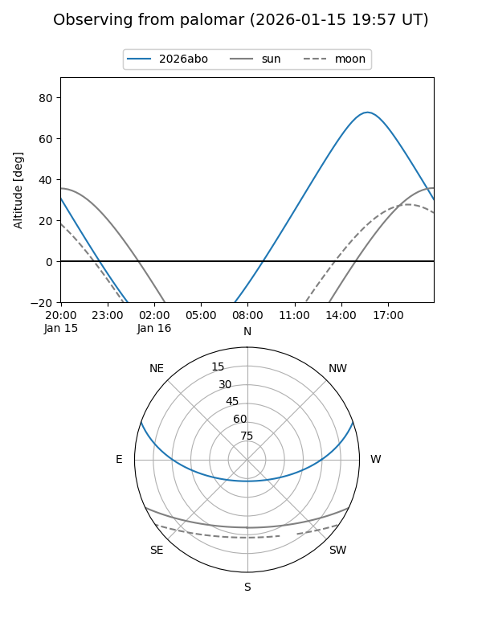
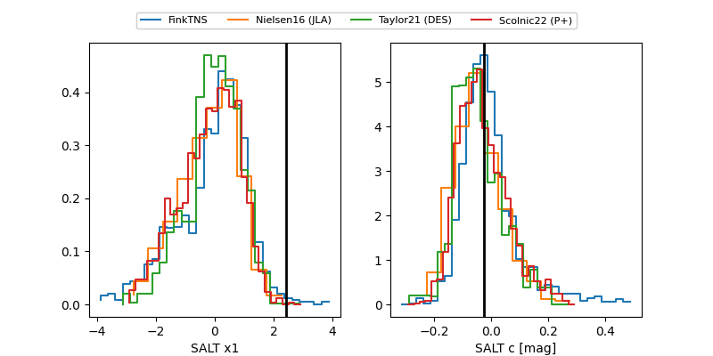

2026abo
Target 2026abo at 2026-01-26 13:26
Aliases and brokers:
FINK: link
Lasair: link
ALeRCE: link
TNS: link
YSE: link
alt names
ZTF26aabdftg (ztf,fink_ztf)
2026abo (tns,yse)
ATLAS26arg (atlas)
Coordinates:
equatorial (ra, dec) = 234.3303,+16.28762
equatorial (HMS+DMS) = 15:37:19.27,+16:17:15.44
galactic (l, b) = (25.9054,+50.17310)
Flags:
confirmed ia
Photometry:
last atlasc=18.64, atlaso=18.35, ztfg=18.05, ztfr=18.00
2 atlasc, 1 atlaso, 8 ztfg, 7 ztfr detections
Lightcurve

Visibility


Additional plots
